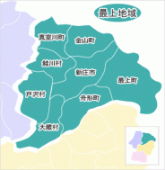

最上地域の魅力
最上地域は最上川舟下りや豊富な温泉地、山菜やキノコなど自然の恵みが楽しめるエリアです。
最上地域の地形
最上地域は山形県の北部を占め、最上川が地域を縦断し、広がる渓谷美が特徴です。周囲は出羽山地に囲まれ、森林資源が豊富で、自然に恵まれた地形となっています。
名産品
観光名所
×

最上地域は最上川舟下りや豊富な温泉地、山菜やキノコなど自然の恵みが楽しめるエリアです。
最上地域は山形県の北部を占め、最上川が地域を縦断し、広がる渓谷美が特徴です。周囲は出羽山地に囲まれ、森林資源が豊富で、自然に恵まれた地形となっています。